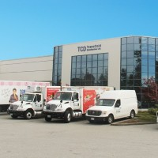
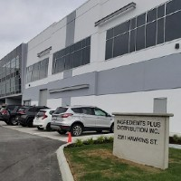
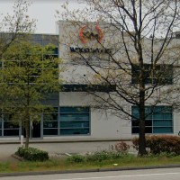

My Experience
Transcold distribution
Mar 2016 - Feb 2020

Shipper/Receiver
- Assisted management with overwatching pickers, and organizing orders to be shipped
- Checked and verified the accuracy of outbound warehouse orders
- Built and repaired racking, as well assisted with maintaining machinery
- Operated a counter balance forklift, reach truck, and electric walkie
Ingredients Plus distribution
Mar 2020 - Aug 2022

Warehouse Associate
- Assisted with maintaining and organizing the warehouse
- Picked orders in a timely manner, while verifying accuracy
- Responsible for both shipping and receiving orders/product
- Put away product and replinished pick-faces while operating a reach truck
Wood Wyantt
Aug 2022 - Present

Supervisor
- responsible for fulfilling the logistics behind receiving
- processing and storing inventory according to purchase orders and company policy
- Processing, packaging and shipping orders accurately
- Organizing stocks and maintaining inventory as well as performing cycle counts
Coding Experience
SAP VAN HACKS 2022(project unfinished)
Social Media platform for use at SAP
- Created and implemented low-fi wireframe design templates for our mvp
- Created various graphics and images for use in our mvp
- Used Tailwind CSS in collaberation to React to implement and create our UI/UX